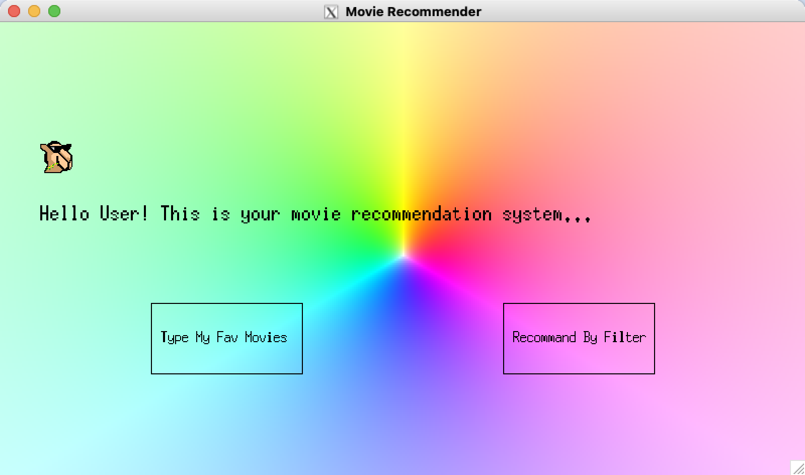
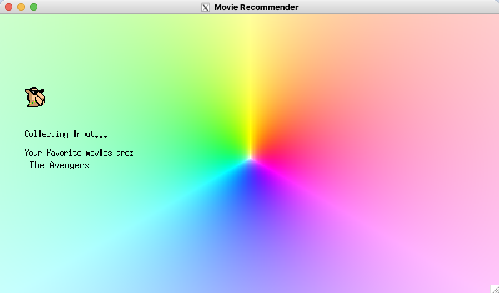
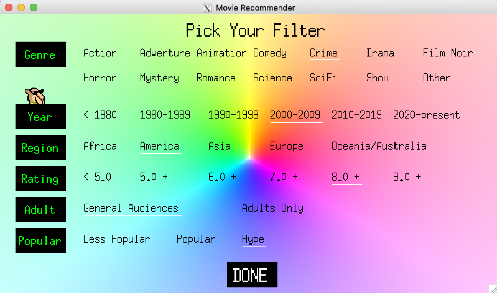

MovieRec
An Ocaml-based Movie Recommendation System (Designed & Implemented by Crystal Hu, Taylor Jiang, Arya Song)
This is a movie recommendation system in Ocaml and deploy the user interface on GUIs. There are two ways for users to choose for the perfect next-to-watch movie recommendation:
The first way is to incorporate the idea of nearest k-neighbors from machine learning, and the second way is apply filter and searching algorithms. For both ways, the system will generate a list of recommended movies based on user inputs.
Technical Details
Data Preprocess
The daily updated raw data are downloaded in .tsv format from IMDb official websit, converted to .csv format, and fused the relevant informationin the format of .csv. We preprocessed data that matches and combines movie information in four datasets. Considering searching time in testing, a sample dataset with a smaller size is selected. The Movie module enables retrieving data from the database and processing it into a list of movie records. Each movie is stored as a record containing information on id (self-generated), genre, type (Movie vs TV series vs Short), region (US vs International), title (original, primary, and translated), director, writer, rating average starts, number of ratings, is_adult, year_start, also a vector created based on quantitative data. Therefore, with the preprocessed dataset, the input movie names can be located in the dataset by movie titles, and can then retrieve corresponding genres, regions, years, whether the content is R rated, etc. If we receive filtered results (to be implemented in the next sprint), we can still use our already implemented Movie module to reduce the searching space based on filters.
User Interface
We created a user interface that asks users for input and is capable of outputting statements as well. In the user interface and graphics display portion, there are two buttons for users to choose whether to recommend based on manually typed movies or filters to indicate prefered types of movies. These two choices will each open up its own display. “Pick Your Filter” page will allow users to pick one choice from each category (genre, year, region, rating, adult, and popularity) to filter. After selecting all the desired choices, users can click “DONE” to send input and a new window will display a list of recommended movies.
Recommender Home Page
Recommender Manual Input Page
Recommender Filter Page
Algorithms: Searching, K-Neighbor, and Filter
The searching algorithm of recommender started off by processing large amound of movie data to improve search time using JSON and building our own Kd Tree. By building a kd tree of movies, we are able to implement different ways to calculate distance for sorting and circularly sort the tree based on features presented by the vector field for each movie. We also displayed different layouts and options on the screen for the user to choose, and the inputs collected from users are used for backend filter processors. After all the backend calculations, the output list of recommended movies is displayed on the screen for the user to view.
In addition, for our KNeighbor algorithm module, we have also achieved all the goals as we planned. We have started to process all movie data into JSON files for a better search time, and implemented different algorithms based on K-nearest neighbors. By building a kd tree of movies, we are able to implement different ways to calculate distance for sorting and circularly sort the tree based on features presented by the vector field for each movie. We also wrote some OUnit test cases to check the accuracy of our sorting algorithm for finding K-nearest neighbors.
Furthermore, we implemented a filter module to handle all the inputs associated with the filter option. Based on users’ choices on filters, we find all the related movies from the database. We also addressed the weights of year, rating, popularity (number of votes), and adult in our algorithm for a better result of sorting. Finally, we pass a list of movies found using the kd tree sorting and filter module back to the front end, and all the recommendations are displayed on the screen.